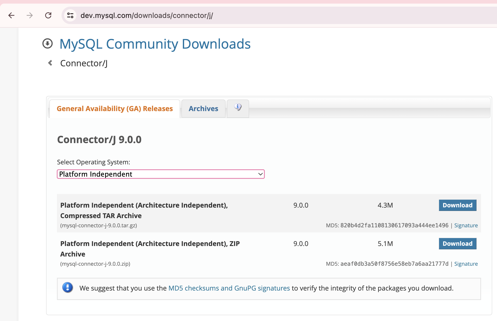
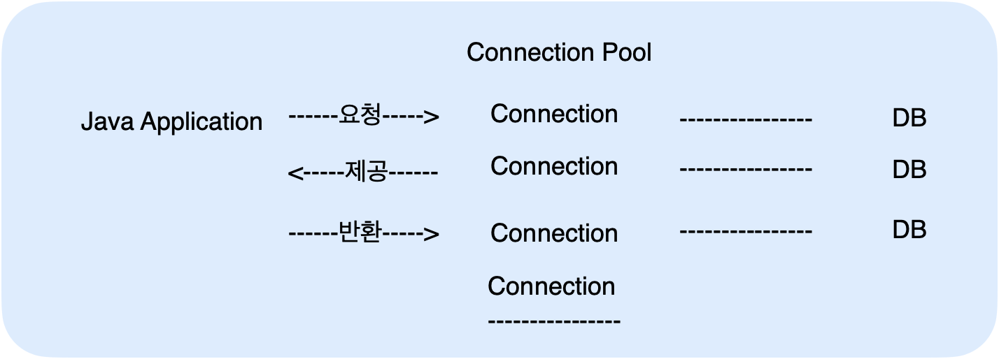
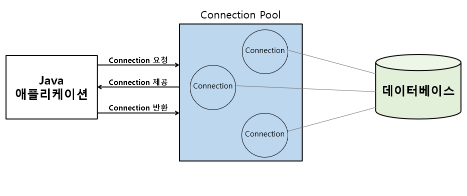
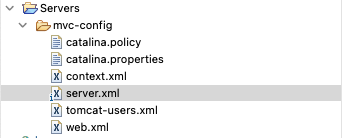

JDBC
JDBC 연결하는 3가지 방법
- 기본 생성자
- 외부 매개변수를 통한 생성자 오버로딩
- ServletContext를 사용한 생성자 오버로딩 ⭐️
JDNI를 이용한 데이터베이스 Connection Pool 관리
- context.xml, server.xml 설정
📌 JDBC 연결
- https://dev.mysql.com/downloads/connector/j/
- platform Independent 선택
- zip으로 된 jar 파일 다운!
- 
- 압축 풀어서 이클립스 lib 폴더 아래에 넣어주기
🍀 JDBC 연결 3가지 방법
- 기본 생성자
- 클래스 내부에 하드코딩된 DB 연결 정보를 사용하여 데이터베이스에 연결
- 생성자 오버로딩1
- 생성자를 통해 외부에서 매개변수로 전달된 DB 연결 정보를 사용하여 데이터베이스에 연결
- 생성자 오버로딩
- ServletContext를 통한 설정 값 사용 :
ServletContext에서 초기화 매개변수를 가져와서 데이터베이스에 연결합니다. 이는 설정을 web.xml에 두고, 코드에서 이를 읽어오는 방식 - 설정정보를 코드와 분리하여 유지보수와 관리가 용이함
- ServletContext를 통한 설정 값 사용 :
JDBC 연결 3가지 코드 예제
package kr.co.kosta.jdbc;
import java.sql.Connection;
import java.sql.DriverManager;
import java.sql.PreparedStatement;
import java.sql.ResultSet;
import java.sql.SQLException;
import java.sql.Statement;
import jakarta.servlet.ServletContext;
public class JDBCConnectTest {
public Connection con;
public Statement stmt;
public PreparedStatement pstmt;
public ResultSet rs;
// 기본 생성자
public JDBCConnectTest() {
try {
// Driver Load
Class.forName("com.mysql.cj.jdbc.Driver");
// DB 연결
String url = "jdbc:mysql://localhost:3306/teampro";
String id = "root";
String pwd = "pass123#";
con = DriverManager.getConnection(url, id, pwd);
System.out.println("DB 연결 성공(기본 생성자)");
} catch (ClassNotFoundException | SQLException e) {
e.printStackTrace();
}
}
// 생성자 오버로딩1
public JDBCConnectTest(String driver, String url, String id, String pwd) {
try {
// 드라이버 로드
Class.forName("com.mysql.cj.jdbc.Driver");
// DB 연결
con = DriverManager.getConnection(url, id, pwd);
System.out.println("DB 연결 성공(생성자 오버로딩1)");
} catch (ClassNotFoundException | SQLException e) {
e.printStackTrace();
}
}
// 생성자 오버로딩 2
public JDBCConnectTest(ServletContext application) {
String driver = application.getInitParameter("MySQLDriver");
try {
// 드라이브 로드
Class.forName(driver);
// DB 연결
String url = application.getInitParameter("MySQLURL");
String id = application.getInitParameter("MySQLId");
String pwd = application.getInitParameter("MySQLPwd");
con = DriverManager.getConnection(url, id, pwd);
System.out.println("DB 연결 성공( 생성자 오버로딩 2)");
} catch (ClassNotFoundException | SQLException e) {
e.printStackTrace();
}
}
// 연결 해제 및 자원 반납
public void close() {
if (con != null)
try {
con.close();
System.out.println("JDBC 자원 해제");
} catch (SQLException e) {
e.printStackTrace();
}
}
}
<%@page import="kr.co.kosta.jdbc.DBConnectionPoolTest"%>
<%@page import="kr.co.kosta.jdbc.JDBCConnectTest"%>
<%@ page language="java" contentType="text/html; charset=UTF-8"
pageEncoding="UTF-8"%>
<!DOCTYPE html>
<html>
<head>
<meta charset="UTF-8">
<title>JDBC test1</title>
</head>
<body>
<h2>JDBC 테스트 1</h2>
<%
JDBCConnectTest jdbc1 = new JDBCConnectTest();
jdbc1.close();
%>
<h2>JDBC 테스트2: 생성자 오버로딩 1</h2>
<%
String driver = application.getInitParameter("MySQLDriver");
//-> getInitParameter에 들어가는 파라미터값은 web.xml에서 얻어오는 param-name값
String url = application.getInitParameter("MySQLURL");
String id = application.getInitParameter("MySQLId");
String pwd = application.getInitParameter("MySQLPwd");
JDBCConnectTest jdbc2 = new JDBCConnectTest(driver, url, id, pwd);
jdbc2.close();
%>
<h2>JDBC 테스트3 : 생성자 오버로딩 2</h2>
<%
JDBCConnectTest jdbc3 = new JDBCConnectTest(application);
jdbc3.close();
%>
</body>
</html>
<?xml version="1.0" encoding="UTF-8"?>
<web-app xmlns:xsi="http://www.w3.org/2001/XMLSchema-instance"
xmlns="https://jakarta.ee/xml/ns/jakartaee"
xsi:schemaLocation="https://jakarta.ee/xml/ns/jakartaee https://jakarta.ee/xml/ns/jakartaee/web-app_6_0.xsd"
id="WebApp_ID" version="6.0">
<display-name>JDBCJSP</display-name>
<welcome-file-list>
<welcome-file>index.html</welcome-file>
<welcome-file>index.jsp</welcome-file>
<welcome-file>index.htm</welcome-file>
<welcome-file>default.html</welcome-file>
<welcome-file>default.jsp</welcome-file>
<welcome-file>default.htm</welcome-file>
</welcome-file-list>
<context-param>
<param-name>MySQLDriver</param-name>
<param-value>com.mysql.cj.jdbc.Driver</param-value>
</context-param>
<context-param>
<param-name>MySQLURL</param-name>
<param-value>jdbc:mysql://localhost:3306/teampro</param-value>
</context-param>
<context-param>
<param-name>MySQLId</param-name>
<param-value>root</param-value>
</context-param>
<context-param>
<param-name>MySQLPwd</param-name>
<param-value>pass123#</param-value>
</context-param>
</web-app>
📌 커넥션 풀 (Connection Pool)
- 어플리케이션이 시작될 때, 커넥션 객체를 미리 생성해두면, 데이터베이스 연결이 필요할 때마다 준비된 커넥션 객체를 사용  
-
JNDI
- WAS가 제공하는 커넥션을 이용함
- Java Naming and Directory Interface
- 이름만으로 찾아 쓸 수있는 디렉토리 서비스
- 우리가 연결하고 싶은 데이터베이스의 DB Pool을 미리 Naming 시켜주는 방법 중 하나이다. 우리가 저장해놓은 WAS 의 데이터베이스 정보에 JNDI를 설정해 놓으면 웹 애플리케이션은 JNDI만 호출하면 간단해진다.
🍀 JNDI 예제 (JDBCJSP프로젝트)
server.xml
- Resource 추가

<GlobalNamingResources>
<!-- Editable user database that can also be used by
UserDatabaseRealm to authenticate users
-->
<Resource auth="Container" description="User database that can be updated and saved" factory="org.apache.catalina.users.MemoryUserDatabaseFactory" name="UserDatabase" pathname="conf/tomcat-users.xml" type="org.apache.catalina.UserDatabase"/>
<Resource
auth = "Container"
driverClassName = "com.mysql.cj.jdbc.Driver"
type = "javax.sql.DataSource"
initialSize = "0"
minIdle = "5"
minTotal = "20"
maxIdle = "20"
maxWaitMillis = "5000"
url = "jdbc:mysql://localhost:3306/teampro?serverTimezone=UTC"
name = "dbcp_mysql"
username = "root"
password = "pass123#"
/>
</GlobalNamingResources>
context.xml
DBConnectionPoolTest.java
package kr.co.kosta.jdbc;
import java.sql.Connection;
import java.sql.PreparedStatement;
import java.sql.ResultSet;
import java.sql.SQLException;
import java.sql.Statement;
import javax.naming.Context;
import javax.naming.InitialContext;
import javax.naming.NamingException;
import javax.sql.DataSource;
public class DBConnectionPoolTest {
public Connection con;
public Statement stmt;
public PreparedStatement pstmt;
public ResultSet rs;
public DBConnectionPoolTest() {
try {
// DataSource(Connection Pool) 객체 얻기
Context context = new InitialContext();
Context ctx = (Context) context.lookup("java:comp/env");
DataSource dataSource = (DataSource) ctx.lookup("dbcp_mysql");
// 커넥션 풀을 통해서 연결 객체 얻기
con = dataSource.getConnection();
System.out.println("DB연결 성공 ( 커넥션 풀 )");
} catch (NamingException | SQLException e) {
System.out.println("DB연결 실패 ( 커넥션 풀 )");
e.printStackTrace();
}
}
// 연결 해제 및 자원 반납
public void close() {
if (con != null)
try {
con.close();
System.out.println("커넥션 풀 자원 해제");
} catch (SQLException e) {
e.printStackTrace();
}
}
}